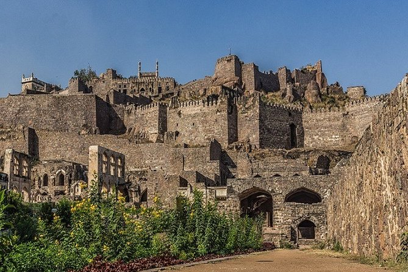
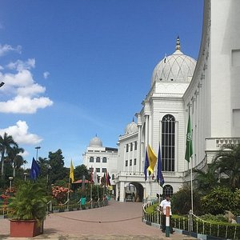
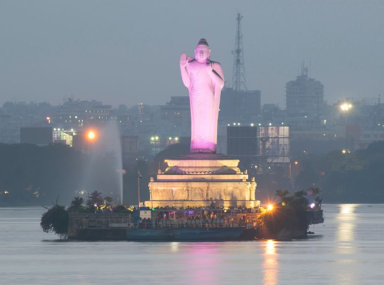
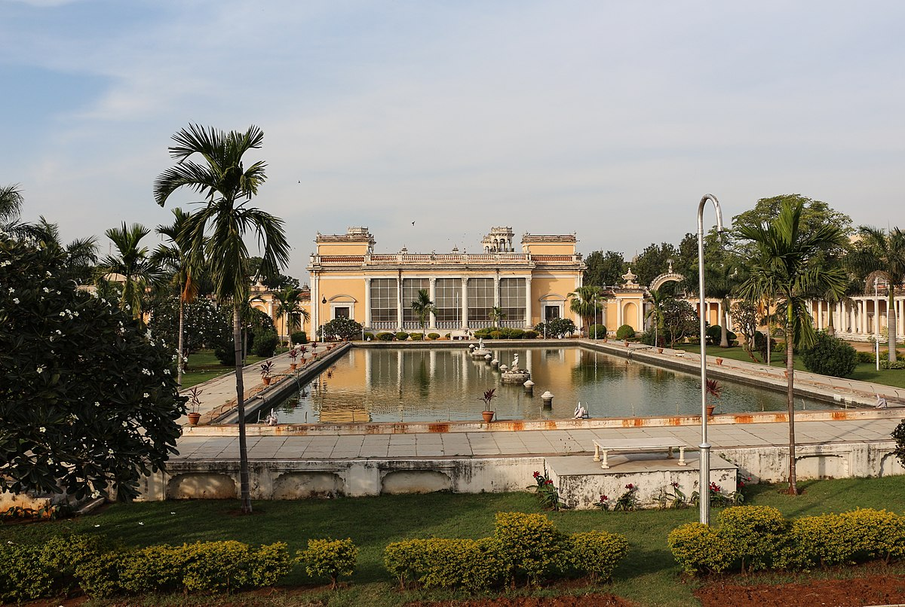
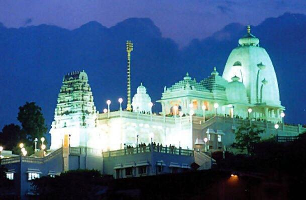

Charminar
Charminar is an iconic monument located in the heart of Hyderabad. Built in 1591, it stands as a symbol of the city’s cultural heritage. The bustling markets around Charminar, like Laad Bazaar, are known for pearls, bangles, and traditional Hyderabadi jewelry.

Golconda Fort
A grand medieval fort known for its advanced acoustics and the light and sound show that narrates its history. The fort offers panoramic views of the city and is a must-visit for history enthusiasts.

Salar Jung Museum
One of the largest museums in India, Salar Jung Museum houses an extensive collection of art, sculptures, manuscripts, and artifacts from different parts of the world.

Hussain Sagar Lake
A heart-shaped lake connecting Hyderabad and Secunderabad, famous for the large Buddha statue in the middle. It’s a favorite spot for boat rides and leisurely evenings by the lake.

Chowmahalla Palace
A royal palace that was the seat of the Nizams, it showcases a blend of Persian, Mughal, and European architecture. The beautifully maintained gardens and grand halls give a glimpse of Hyderabad’s royal past.

Birla Mandir
Imposing, hilltop Hindu temple built of white marble, with towers, shrines and interior carvings.